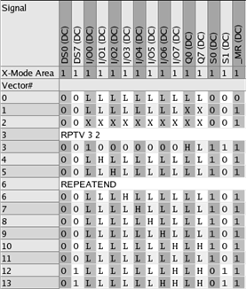
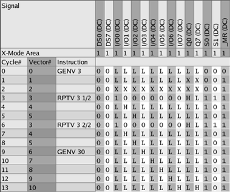

Collapsed and expanded mode
The pattern editor can display patterns in two different view modes:
- collapsed mode and
- expanded mode.
When you open a pattern in the pattern editor, the pattern is displayed in collapsed mode. If the opened pattern is the primary pattern, you can switch the view mode from collapsed to expanded mode.
The collapsed mode does not display the dynamic behaviour of the sequencer instructions. The expanded mode shows the cycles as they are executed and displays failure data, if a test was executed with errors.
How to switch between the modes
When the primary pattern is displayed in
the pattern editor, the  icon in then main menu bar toggles the display between collapsed and expanded mode.
icon in then main menu bar toggles the display between collapsed and expanded mode.
Example
The following two figures show the same pattern in collapsed mode and in expanded mode.

The pattern contains the sequencer instruction RPTV 3 2, which means the next three vectors are performed twice.
In the figure below, which shows the same pattern in expanded mode, you can see the resolved sequencer instruction and the Cycle# column.
